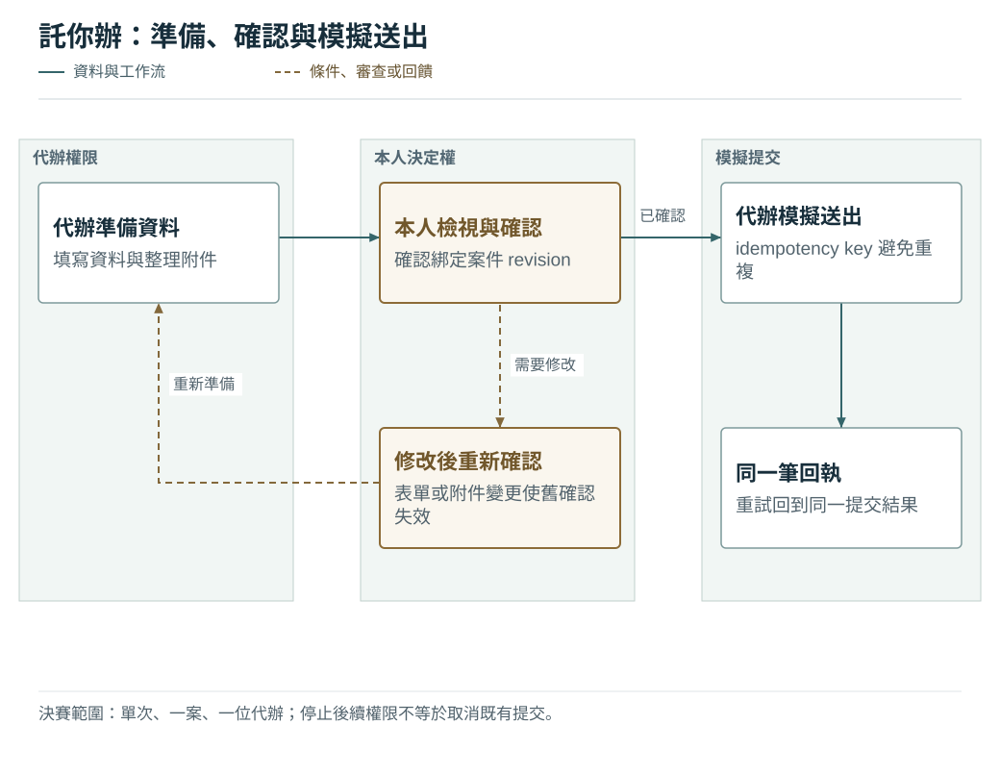
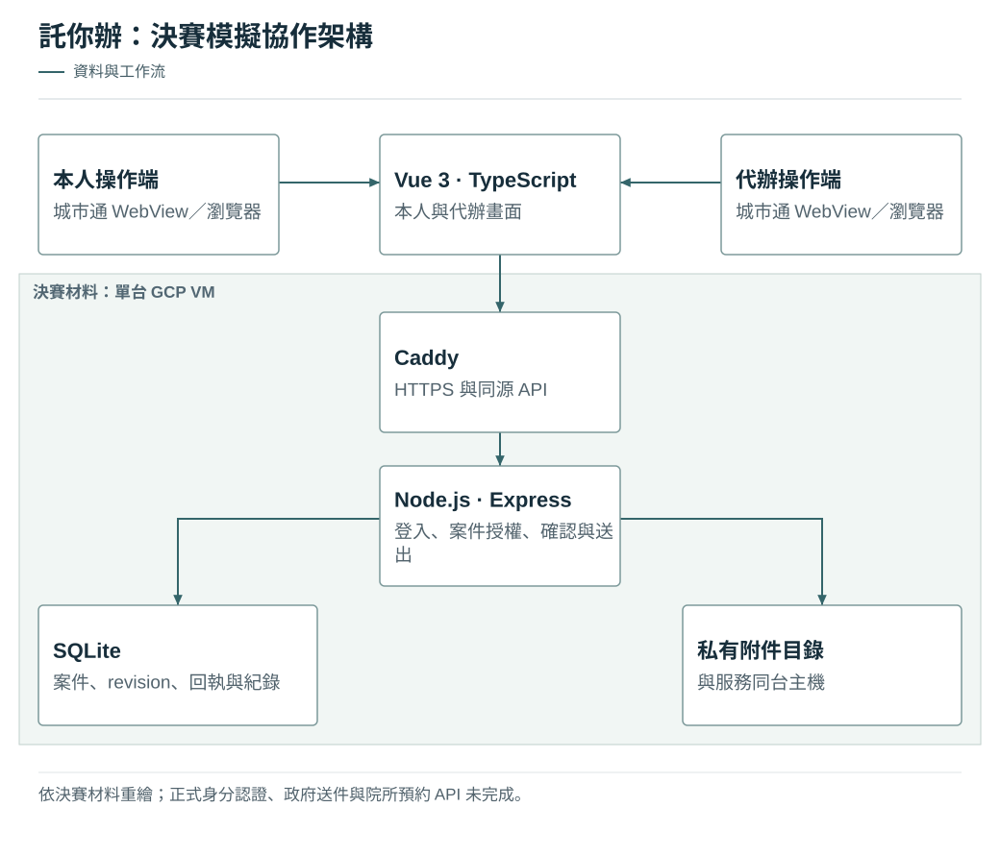

使用場景：能做決定，卻不方便完成整張表單
提案以需要家人或照護者協助的人為出發點：本人可能看得懂摘要，也能表達同意，卻不熟悉多步驟填寫、資料整理與附件操作。託你辦把「準備內容」與「決定是否送出」拆開，讓協助者接手操作，同時保留本人參與。
決賽以健檢需求安排作模擬案例：代辦準備內容、本人確認或退回，再由代辦模擬送出。機構名單與實際預約能力是兩件事，展示不代表院所有接收申請或保證名額。
兩支手機如何完成同一件事

雙方使用各自的操作端，共用後端案件狀態。本人看得到準備內容與結果，代辦也能知道目前是在等待確認、需要修改，或已取得模擬回執。
系統架構：App 提供入口，後端控制案件與權限

城市通 Flutter App 以 WebView 開啟服務，一般瀏覽器也能進入。Vue 3 與 TypeScript 負責本人、代辦畫面；HTTPS 請求經 Caddy 到 Node.js／Express。後端管理登入狀態、接手授權、案件、確認與送出，SQLite 保存案件與紀錄，附件另放私有目錄。
決賽材料採單台 GCP VM 的模擬協作架構。城市通內掃碼規劃透過 Bridge，一般瀏覽器使用相機與 jsQR；分享／貼上連結作為備援。App Bridge、附件選擇器與完整雙手機體驗在講稿中仍列待驗收項目。
規格中的三個關鍵控制
確認要對應到實際內容
本人確認綁定案件 revision。代辦若再修改表單或附件，舊確認就失效，必須重新交給本人確認，避免「同意的是 A，送出的卻是 B」。
權限由後端逐次檢查
每次 API 請求都要檢查 session、案件歸屬與授權狀態。短效接手碼協助代辦領取案件，不能視為政府身分認證；本人停止協助後，應阻擋後續存取。
重試不應重複建立結果
送出使用 idempotency key，讓逾時重試或連續點擊回到同一筆提交與回執。已提交內容與停止後續權限分開處理，停止不等於自動取消既有結果。
我的貢獻與專案收斂
我負責題目發想、應用場景、規格定義與決賽簡報。規格涵蓋授權範圍、操作流程、資料權限、API 與驗收條件；團隊依規格分工進行技術設計與實作。
完整 SPEC 曾探討期間授權與多案件，決賽講稿則收斂為單次、一案、一位代辦，聚焦「準備 → 本人確認 → 模擬送出」。這裡分開呈現設計範圍與決賽口徑。
結果與後續驗證
- 競賽規模
- 全台 85 隊、395 人報名；40 隊晉級正式賽。
- 參賽成果
- 團隊入圍決賽。
團隊入圍 2026 城市通微服務大黑客松決賽。提案的使用需求仍待訪談驗證；正式身分認證、代理規則與政府及院所介接尚未完成，決賽展示為模擬流程。